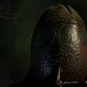
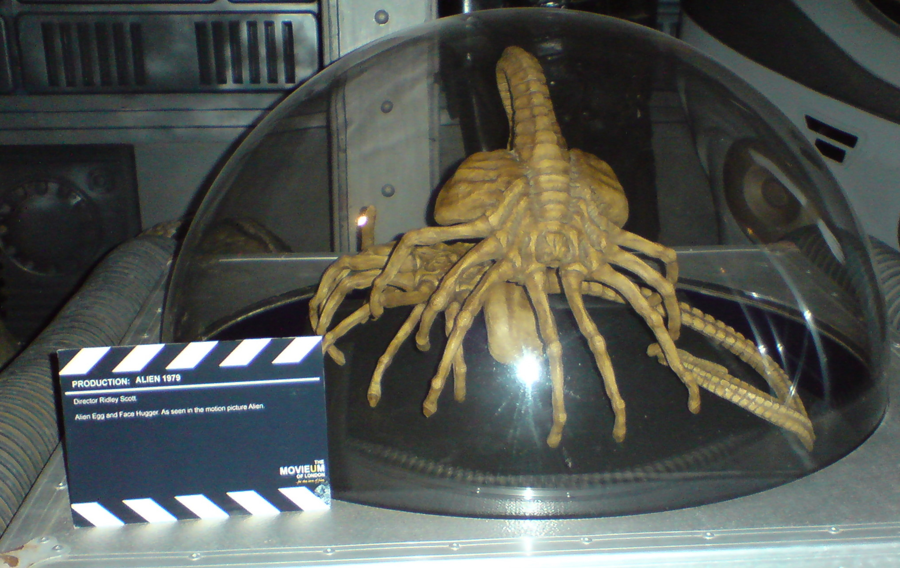
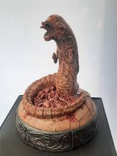
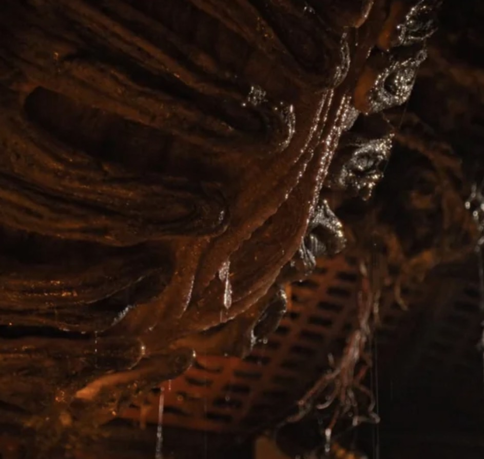

Home
Evolution
The hive
Variations
From Egg To Predator
- Egg
- facehugger
- ChestBurster
- Cocoon
- Adult Predator
Ovomorph
The Fisrt stage of the xenomorph life cycle begins with an Egg inside the egg holds a spider like parasite that lays itself on your face. These eggs may be layed by the queen or harvested by the xenomorph itself.

image by "unknown" from "DeviantArts"
Facehugger
The facehugger after landing itself on your face and is almost impossible to take off. While on your face the facehugger lays an embrio inside your stomach and then shortly dies after

image by "R h" from "wikicommons"
ChestBurster
The chestburster is a worm like creature that is created from the human body after a facehuggger had laid it. The chestburster within minutes of the facehugger falling off and dieing violently bursts out of the hosts chest.

image by "Mayimbú" from "Wikimedia commons"
Cocoon
The cocoon was only seen in "Alien Romulus" to fill in for the hour or two that it takes for the chestburster to grow. After the chestburster escapes the host it sheds it's skin and hides itself inside a cocoon where the process to become an adult starts turning into a reality.

Image from "Alien Romulus" taken by "Carter Gianino"
adult
After The xenomorph escapes from the cocoon the killing machine is born. THe xenomorph can run up to 60 mph and has a few jobs. Help the hive grow, protect the hive, and protect the queen. The Xenomorphs can also evolve using a substance in the hive called royal jelly.

image by "unknown" from "DeviantArt"